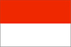
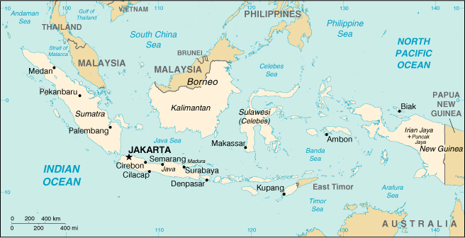

|
Indonesia |  |
| Introduction Geography People Government Economy Communications Transportation Military Transnational Issues | ||
|  | ||
| Indonesia | Introduction | Top of Page |
| Background: | The world's largest archipelago, Indonesia achieved independence from the Netherlands in 1949. Current issues include: implementing IMF-mandated reforms of the banking sector, effecting a transition to a popularly elected government after four decades of authoritarianism, addressing charges of cronyism and corruption, holding the military accountable for human rights violations, and resolving growing separatist pressures in Aceh and Irian Jaya. On 30 August 1999 a provincial referendum for independence was overwhelmingly approved by the people of Timor Timur. Concurrence followed by Indonesia's national legislature, and the name East Timor was provisionally adopted. The independent status of East Timor - now under UN administration - has yet to be formally established. |
| Indonesia | Geography | Top of Page |
| Location: | Southeastern Asia, archipelago between the Indian Ocean and the Pacific Ocean |
| Geographic coordinates: | 5 00 S, 120 00 E |
| Map references: | Southeast Asia |
| Area: |
total:
1,919,440 sq km
land: 1,826,440 sq km water: 93,000 sq km |
| Area - comparative: | slightly less than three times the size of Texas |
| Land boundaries: |
total:
2,602 km
border countries: Malaysia 1,782 km, Papua New Guinea 820 km |
| Coastline: | 54,716 km |
| Maritime claims: |
measured from claimed archipelagic baselines
exclusive economic zone: 200 NM territorial sea: 12 NM |
| Climate: | tropical; hot, humid; more moderate in highlands |
| Terrain: | mostly coastal lowlands; larger islands have interior mountains |
| Elevation extremes: |
lowest point:
Indian Ocean 0 m
highest point: Puncak Jaya 5,030 m |
| Natural resources: | petroleum, tin, natural gas, nickel, timber, bauxite, copper, fertile soils, coal, gold, silver |
| Land use: |
arable land:
10%
permanent crops: 7% permanent pastures: 7% forests and woodland: 62% other: 14% (1993 est.) |
| Irrigated land: | 45,970 sq km (1993 est.) |
| Natural hazards: | occasional floods, severe droughts, tsunamis, earthquakes, volcanoes |
| Environment - current issues: | deforestation; water pollution from industrial wastes, sewage; air pollution in urban areas; smoke and haze from forest fires |
| Environment - international agreements: |
party to:
Biodiversity, Climate Change, Desertification, Endangered Species, Hazardous Wastes, Law of the Sea, Nuclear Test Ban, Ozone Layer Protection, Ship Pollution, Tropical Timber 83, Tropical Timber 94, Wetlands
signed, but not ratified: Climate Change-Kyoto Protocol, Marine Life Conservation |
| Geography - note: | archipelago of 17,000 islands (6,000 inhabited); straddles Equator; strategic location astride or along major sea lanes from Indian Ocean to Pacific Ocean |
| Indonesia | People | Top of Page |
| Population: | 228,437,870 (July 2001 est.) |
| Age structure: |
0-14 years:
30.26% (male 35,144,702; female 33,973,879)
15-64 years: 65.11% (male 74,273,519; female 74,458,291) 65 years and over: 4.63% (male 4,641,816; female 5,945,663) (2001 est.) |
| Population growth rate: | 1.6% (2001 est.) |
| Birth rate: | 22.26 births/1,000 population (2001 est.) |
| Death rate: | 6.3 deaths/1,000 population (2001 est.) |
| Net migration rate: | 0 migrant(s)/1,000 population (2001 est.) |
| Sex ratio: |
at birth:
1.05 male(s)/female
under 15 years: 1.03 male(s)/female 15-64 years: 1 male(s)/female 65 years and over: 0.78 male(s)/female total population: 1 male(s)/female (2001 est.) |
| Infant mortality rate: | 40.91 deaths/1,000 live births (2001 est.) |
| Life expectancy at birth: |
total population:
68.27 years
male: 65.9 years female: 70.75 years (2001 est.) |
| Total fertility rate: | 2.58 children born/woman (2001 est.) |
| HIV/AIDS - adult prevalence rate: | 0.05% (1999 est.) |
| HIV/AIDS - people living with HIV/AIDS: | 52,000 (1999 est.) |
| HIV/AIDS - deaths: | 3,100 (1999 est.) |
| Nationality: |
noun:
Indonesian(s)
adjective: Indonesian |
| Ethnic groups: | Javanese 45%, Sundanese 14%, Madurese 7.5%, coastal Malays 7.5%, other 26% |
| Religions: | Muslim 88%, Protestant 5%, Roman Catholic 3%, Hindu 2%, Buddhist 1%, other 1% (1998) |
| Languages: | Bahasa Indonesia (official, modified form of Malay), English, Dutch, local dialects, the most widely spoken of which is Javanese |
| Literacy: |
definition:
age 15 and over can read and write
total population: 83.8% male: 89.6% female: 78% (1995 est.) |
| Indonesia | Government | Top of Page |
| Country name: |
conventional long form:
Republic of Indonesia
conventional short form: Indonesia local long form: Republik Indonesia local short form: Indonesia former: Netherlands East Indies; Dutch East Indies |
| Government type: | republic |
| Capital: | Jakarta |
| Administrative divisions: |
27 provinces (propinsi-propinsi, singular - propinsi), 2 special regions* (daerah-daerah istimewa, singular - daerah istimewa), and 1 special capital city district** (daerah khusus ibukota); Aceh*, Bali, Banten, Bengkulu, Gorontalo, Irian Jaya, Jakarta Raya**, Jambi, Jawa Barat, Jawa Tengah, Jawa Timur, Kalimantan Barat, Kalimantan Selatan, Kalimantan Tengah, Kalimantan Timur, Kepulauan Bangka Belitung, Lampung, Maluku, Maluku Utara, Nusa Tenggara Barat, Nusa Tenggara Timur, Riau, Sulawesi Selatan, Sulawesi Tengah, Sulawesi Tenggara, Sulawesi Utara, Sumatera Barat, Sumatera Selatan, Sumatera Utara, Yogyakarta*; note - the province of Irian Jaya may have been divided into two new provinces - Central Irian Jaya and West Irian Jaya; with the implementation of decentralization on 1 January 2001, the 357 districts (regencies) may become the key administrative units
note: following the 30 August 1999 provincial referendum for independence which was overwhelmingly approved by the people of Timor Timur and the October 1999 concurrence of Indonesia's national legislature, the name East Timor was adopted as a provisional name for the political entity formerly known as Propinsi Timor Timur; East Timor is under UN administration pending its formal independence |
| Independence: | 17 August 1945 (proclaimed independence; on 27 December 1949, Indonesia became legally independent from the Netherlands) |
| National holiday: | Independence Day, 17 August (1945) |
| Constitution: | August 1945, abrogated by Federal Constitution of 1949 and Provisional Constitution of 1950, restored 5 July 1959 |
| Legal system: | based on Roman-Dutch law, substantially modified by indigenous concepts and by new criminal procedures code; has not accepted compulsory ICJ jurisdiction |
| Suffrage: | 17 years of age; universal and married persons regardless of age |
| Executive branch: |
chief of state:
President Abdurrahman WAHID (since 20 October 1999) and Vice President MEGAWATI Sukarnoputri (since 21 October 1999); note - the president is both the chief of state and head of government
head of government: President Abdurrahman WAHID (since 20 October 1999) and Vice President MEGAWATI Sukarnoputri (since 21 October 1999); note - the president is both the chief of state and head of government cabinet: Cabinet appointed by the president elections: president and vice president elected separately by the 700-member People's Consultative Assembly or MPR for five-year terms; election last held 20 and 21 October 1999 (next to be held by NA 2004) election results: Abdurrahman WAHID elected president, receiving 373 votes to 313 votes for MEGAWATI Sukarnoputri; MEGAWATI Sukarnoputri elected vice president, defeating Hamzah HAZ; vote totals NA note: the People's Consultative Assembly (Majelis Permusyawaratan Rakyat or MPR) includes the House of Representatives (Dewan Perwakilan Rakyat or DPR) plus 200 indirectly selected members; it meets every five years to elect the president and vice president and to approve the broad outlines of national policy |
| Legislative branch: |
unicameral House of Representatives or Dewan Perwakilan Rakyat (DPR) (500 seats; 462 elected by popular vote, 38 are appointed military representatives; members serve five-year terms)
elections: last held 7 June 1999 (next to be held NA June 2004) election results: percent of vote by party - PDI-P 37.4%, Golkar 20.9%, PKB 17.4%, PPP 10.7%, PAN 7.3%, PBB 1.8%, other 4.5%; seats by party - PDI-P 154, Golkar 120, PPP 58, PKB 51, PAN 35, PBB 14, other 30 |
| Judicial branch: | Supreme Court or Mahkamah Agung (justices appointed by the president from a list of candidates approved by the legislature) |
| Political parties and leaders: | Crescent Moon and Star Party or PBB [Yusril Ihza MAHENDRA, chairman]; Development Unity Party or PPP (federation of former Islamic parties) [Hamzah HAZ, chairman]; Federation of Functional Groups or Golkar [Akbar TANJUNG, general chairman]; Indonesia Democracy Party or PDI (federation of former Nationalist and Christian Parties) [Budi HARDJONO, chairman]; Indonesia Democracy Party-Struggle or PDI-P [MEGAWATI Sukarnoputri, chairperson]; National Awakening Party or PKB [Matori Abdul DJALIL, chairman]; National Mandate Party or PAN [Amien RAIS, chairman] |
| Political pressure groups and leaders: | NA |
| International organization participation: | APEC, ARF, AsDB, ASEAN, CCC, CP, ESCAP, FAO, G-15, G-19, G-77, IAEA, IBRD, ICAO, ICC, ICFTU, ICRM, IDA, IDB, IFAD, IFC, IFRCS, IHO, ILO, IMF, IMO, Inmarsat, Intelsat, Interpol, IOC, IOM (observer), ISO, ITU, NAM, OIC, OPCW, OPEC, UN, UNCTAD, UNESCO, UNIDO, UNIKOM, UNMIBH, UNMOP, UNMOT, UNOMIG, UPU, WCL, WFTU, WHO, WIPO, WMO, WToO, WTrO |
| Diplomatic representation in the US: |
chief of mission:
Ambassador DORODJATUN Kuntjoro-Jakti
chancery: 2020 Massachusetts Avenue NW, Washington, DC 20036 telephone: [1] (202) 775-5200 FAX: [1] (202) 775-5365 consulate(s) general: Chicago, Houston, Los Angeles, New York, and San Francisco |
| Diplomatic representation from the US: |
chief of mission:
Ambassador Robert GELBARD
embassy: Jalan Merdeka Selatan 4-5, Jakarta 10110 mailing address: Unit 8129, Box 1, APO AP 96520 telephone: [62] (21) 3435-9000 FAX: [62] (21) 3435-9922 consulate(s) general: Surabaya |
| Flag description: | two equal horizontal bands of red (top) and white; similar to the flag of Monaco, which is shorter; also similar to the flag of Poland, which is white (top) and red |
| Indonesia | Economy | Top of Page |
| Economy - overview: | Indonesia, a vast polyglot nation, faces severe economic problems, stemming from secessionist movements and the low level of security in the regions, the lack of reliable legal recourse in contract disputes, corruption, weaknesses in the banking system, and strained relations with the IMF. Investor confidence will remain low and few new jobs will be created under these circumstances. Growth of 4.8% in 2000 is not sustainable, being attributable to favorable short-term factors, including high world oil prices, a surge in nonoil exports, and increased domestic demand for consumer durables. |
| GDP: | purchasing power parity - $654 billion (2000 est.) |
| GDP - real growth rate: | 4.8% (2000 est.) |
| GDP - per capita: | purchasing power parity - $2,900 (2000 est.) |
| GDP - composition by sector: |
agriculture:
21%
industry: 35% services: 44% (1999 est.) |
| Population below poverty line: | 20% (1998) |
| Household income or consumption by percentage share: |
lowest 10%:
3.6%
highest 10%: 30.3% (1996) |
| Inflation rate (consumer prices): | 9% (2000 est.) |
| Labor force: | 99 million (1999) |
| Labor force - by occupation: | agriculture 45%, industry 16%, services 39% (1999 est.) |
| Unemployment rate: | 15%-20% (1998 est.) |
| Budget: |
revenues:
$26 billion
expenditures: $30 billion, including capital expenditures of $NA (2000 est.) |
| Industries: | petroleum and natural gas; textiles, apparel, and footwear; mining, cement, chemical fertilizers, plywood; rubber; food; tourism |
| Industrial production growth rate: | 7.5% (2000 est.) |
| Electricity - production: | 78.674 billion kWh (1999) |
| Electricity - production by source: |
fossil fuel:
80.36%
hydro: 14.63% nuclear: 0% other: 5.01% (1999) |
| Electricity - consumption: | 73.167 billion kWh (1999) |
| Electricity - exports: | 0 kWh (1999) |
| Electricity - imports: | 0 kWh (1999) |
| Agriculture - products: | rice, cassava (tapioca), peanuts, rubber, cocoa, coffee, palm oil, copra; poultry, beef, pork, eggs |
| Exports: | $64.7 billion (f.o.b., 2000 est.) |
| Exports - commodities: | oil and gas, plywood, textiles, rubber |
| Exports - partners: | Japan 21%, US 14%, Singapore 10%, South Korea 7%, Netherlands 3%, Australia 3%, Hong Kong, China, Taiwan (1999 est.) |
| Imports: | $40.4 billion (c.i.f., 2000 est.) |
| Imports - commodities: | machinery and equipment; chemicals, fuels, foodstuffs |
| Imports - partners: | Japan 12%, US 12%, Singapore 10%, Germany 6%, Australia 6%, South Korea 6%, Taiwan, China (1999 est.) |
| Debt - external: | $144 billion (2000 est.) |
| Economic aid - recipient: | $43 billion from IMF program and other official external financing (1997-2000) |
| Currency: | Indonesian rupiah (IDR) |
| Currency code: | IDR |
| Exchange rates: | Indonesian rupiahs per US dollar - 10,000 (January 2001), 8,421.8 (2000), 7,855.2 (1999), 10,013.6 (1998), 2,909.4 (1997), 2,342.3 (1996) |
| Fiscal year: | calendar year; note - previously was 1 April - 31 March, but starting with 2001, has been changed to calendar year |
| Indonesia | Communications | Top of Page |
| Telephones - main lines in use: | 5,588,310 (1998) |
| Telephones - mobile cellular: | 1.07 million (1998) |
| Telephone system: |
general assessment:
domestic service fair, international service good
domestic: interisland microwave system and HF radio police net; domestic satellite communications system international: satellite earth stations - 2 Intelsat (1 Indian Ocean and 1 Pacific Ocean) |
| Radio broadcast stations: | AM 678, FM 43, shortwave 82 (1998) |
| Radios: | 31.5 million (1997) |
| Television broadcast stations: | 41 (1999) |
| Televisions: | 13.75 million (1997) |
| Internet country code: | .id |
| Internet Service Providers (ISPs): | 24 (2000) |
| Internet users: | 400,000 (2000) |
| Indonesia | Transportation | Top of Page |
| Railways: |
total:
6,458 km
narrow gauge: 5,961 km 1.067-m gauge (101 km electrified; 101 km double track); 497 km 0.750-m gauge (1995) |
| Highways: |
total:
342,700 km
paved: 158,670 km unpaved: 184,030 km (1997) |
| Waterways: |
21,579 km total
note: Sumatra 5,471 km, Java and Madura 820 km, Kalimantan 10,460 km, Sulawesi (Celebes) 241 km, Irian Jaya 4,587 km |
| Pipelines: | crude oil 2,505 km; petroleum products 456 km; natural gas 1,703 km (1989) |
| Ports and harbors: | Cilacap, Cirebon, Jakarta, Kupang, Makassar, Palembang, Semarang, Surabaya |
| Merchant marine: |
total:
609 ships (1,000 GRT or over) totaling 2,698,157 GRT/3,723,933 DWT
ships by type: bulk 36, cargo 357, chemical tanker 10, container 25, liquefied gas 3, livestock carrier 1, passenger 7, passenger/cargo 14, petroleum tanker 117, refrigerated cargo 1, roll on/roll off 15, short-sea passenger 8, specialized tanker 10, vehicle carrier 5 (2000 est.) |
| Airports: | 453 (2000 est.) |
| Airports - with paved runways: |
total:
136
over 3,047 m: 4 2,438 to 3,047 m: 12 1,524 to 2,437 m: 39 914 to 1,523 m: 44 under 914 m: 37 (2000 est.) |
| Airports - with unpaved runways: |
total:
317
1,524 to 2,437 m: 6 914 to 1,523 m: 28 under 914 m: 283 (2000 est.) |
| Heliports: | 4 (2000 est.) |
| Indonesia | Military | Top of Page |
| Military branches: |
Army, Navy, Air Force, Marines
note: as of 1 July 2000, the National Police became an independent organization that reports directly to the president |
| Military manpower - military age: | 18 years of age |
| Military manpower - availability: | males age 15-49: 64,046,049 (2001 est.) |
| Military manpower - fit for military service: | males age 15-49: 37,418,755 (2001 est.) |
| Military manpower - reaching military age annually: | males: 2,263,706 (2001 est.) |
| Military expenditures - dollar figure: | $1 billion (FY98/99) |
| Military expenditures - percent of GDP: | 1.3% (FY98/99) |
| Indonesia | Transnational Issues | Top of Page |
| Disputes - international: | Sipadan and Ligitan Islands in dispute with Malaysia |
| Illicit drugs: | illicit producer of cannabis largely for domestic use; possible growing role as transshipment point for Golden Triangle heroin |
{kind=link}
{kind=link}